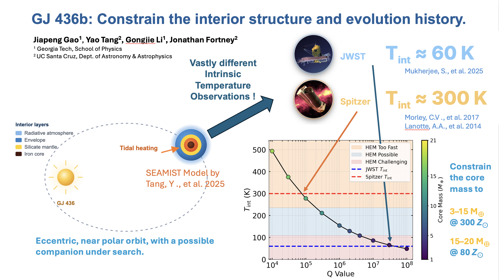

About me
I am a Physics PhD student at the Georgia Institute of Technology, working with Prof. Gongjie Li. I study how planets form, migrate, and evolve by connecting their interior structure with orbital dynamics.
My primary research focuses on warm sub-Saturns and the warm Neptune GJ 436b. I also work on machine learning for exoplanet detection, building on earlier research in gravitational waves and multi-messenger astronomy.
Key results and contributions
- Warm sub-Saturn formation: I developed a model coupling planetary radius inflation with high-eccentricity migration, demonstrating a formation channel. My first-author manuscript is under review.
- GJ 436b’s interior: Our coupled model gives core-mass constraints of 3–15 Earth masses at 300× solar metallicity and 15–20 Earth masses at 80× solar metallicity, within the model assumptions.
- ExoplanetML — Group Project Leader: I led the group project building a machine learning pipeline to identify false positives in exoplanet light curves.
Primary research
Warm sub-Saturn formation
I developed a structure-coupled von Zeipel–Lidov–Kozai (ZLK) migration model that links planetary radius inflation with high-eccentricity orbital evolution. The model demonstrates a formation channel for warm sub-Saturns.
By evolving the planet’s interior and orbit together, we can explore how radius inflation affects its migration toward its host star. The animation below follows a model for TOI-1842b alongside its measured properties.
Jiapeng Gao & Gongjie Li. First-author manuscript under review.
The interior and evolution of GJ 436b
I apply a coupled structure and dynamical evolution model to constrain GJ 436b’s interior and migration history. With Yao Tang, Gongjie Li, and Jonathan Fortney, I connect tidal heating and orbital migration to models of the planet’s internal structure.
Our project explores how different intrinsic-temperature estimates and assumed metallicities affect the possible core mass. The project figure gives constraints of 3–15 Earth masses at 300× solar metallicity and 15–20 Earth masses at 80× solar metallicity, within the coupled model assumptions.
Jiapeng Gao, Yao Tang, Gongjie Li & Jonathan Fortney. Presented at the 57th Annual DDA Meeting, June 2026.
{kind=link}

Other research and projects
ExoplanetML — Group Project Leader
I led the ExoplanetML group project for ML 7641 Machine Learning at Georgia Tech in Fall 2025. Our team built a machine learning pipeline to process exoplanet light-curve data and identify false-positive detections. Group 51, Georgia Institute of Technology.
DeepTTV
I contributed to a deep learning framework for predicting hidden exoplanets from transit timing variations. The manuscript is submitted; see the publication details.
Stability of planetary systems
I co-authored a review of orbital stability around single main-sequence stars, covering compact and hierarchical multi-planet systems. Read on arXiv.
Testing Lorentz violation with inspirals
I developed gravitational-waveform code incorporating Lorentz-violating parameters and used Fisher-matrix forecasts to investigate tighter constraints on the graviton mass. Advisor: Prof. Carlo Contaldi, Imperial College London, 2022–2023.
Double white dwarfs in the Milky Way
I simulated observations of Galactic double white dwarfs with LSST, CSST, LISA, and TianQin, showing how gravitational-wave localization can guide optical follow-up. Advisor: Prof. Yan Wang, HUST, 2019–2020. My thesis received the Outstanding Undergraduate Thesis award, ranking in the department’s top 3%.
Background, teaching, and service
- Georgia Institute of Technology: PhD in Physics, expected 2028; MS in Physics, 2025.
- Imperial College London: Graduate studies, MSc Physics with Extended Research, 2021–2023.
- Huazhong University of Science and Technology: BS in Physics, 2020.
I have taught Stellar Astrophysics, Relativity, and Introductory Physics as a teaching assistant at Georgia Tech. I also serve as a referee for The Astrophysical Journal and The Astrophysical Journal Letters.
I enjoy sharing astronomy beyond the research community, including “Earth as an Exoplanet” talks at Astronomy on Tap and the Atlanta Astronomy Club.